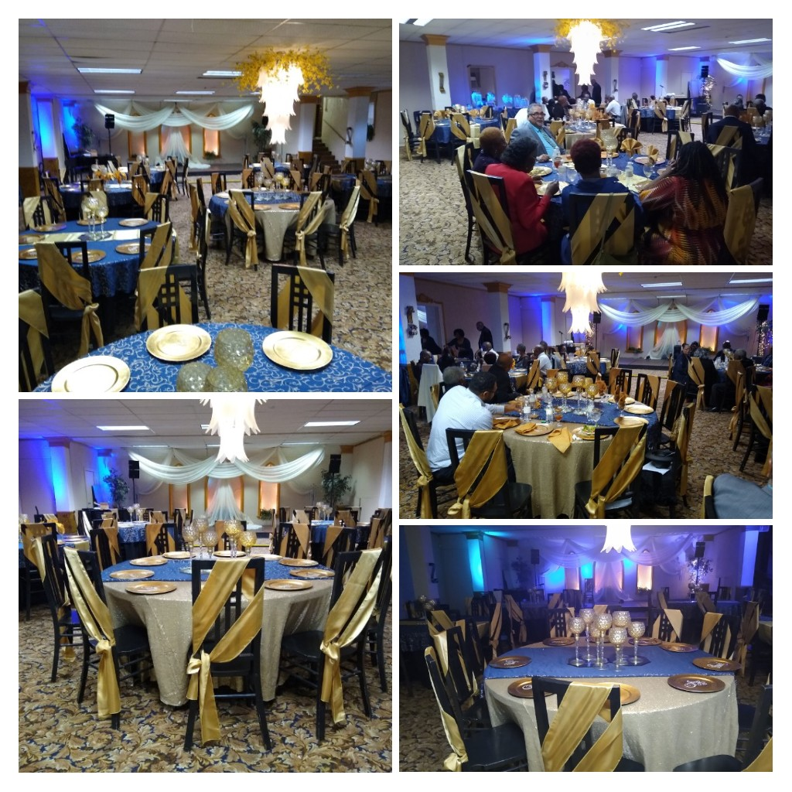

Need a Venue?
Taste of Grace is part of Grace Cathedral Church. The 100 year old church is located in Beacon Hill neighborhood in San Antonio Texas. Apart from the weekly church services, we host everything from weddings to funerals. If you are looking for a venue, you can send us a message or call to book a viewing and speak with us.
